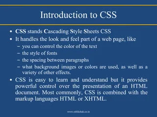

Introduction to CSS
CSS (Cascading Style Sheets) is a stylesheet language used to describe the presentation of a document written in HTML. It allows developers to control the layout, colors, fonts, and other visual aspects of web pages.
Because "CSS" can refer to two completely different topics, here is the essential information for both the web design technology and the college financial aid application.
Cascading Style Sheets (CSS) is a cornerstone technology of the World Wide Web used to handle the presentation, layout, and visual design of web pages written in HTML. While HTML structures the content (like headings and paragraphs), CSS controls how that content looks
Core Function: It is used by roughly 400 colleges, universities, and scholarship programs to award institutional financial aid (grants and scholarships directly funded by the school).
In this course, I have learned how to create a basic HTML5 structure, including the use of semantic elements like header> nav, main, and footer. I have also learned how to use CSS to style my web pages, including setting colors, fonts, and layouts. Additionally, I have learned about responsive design techniques that allow web pages to adapt to different screen sizes and devices.
Overall, this course has provided me with a solid foundation in web development, and I am excited to continue learning and building more complex websites in the future.


What I Have Learned
CSS (Cascading Style Sheets) is a foundational style sheet language used to define the visual presentation, layout, and design of documents written in a markup language like HTML. While HTML builds the raw structure and skeleton of a webpage, CSS acts as the design layer—controlling things like colors, fonts, spacing, layout alignments, and animations.